Analiza 2
okt. '94, smer R
1. Neka je funkcija ƒ : U ® R definisana u oklini U tacke (0,0) i 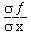(0,0) = ƒ (0,0) = 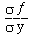(0,0). Tada je potreban i dovoljan uslov da funkcija bude diferencijabilna u tacki (0,0) da je
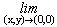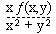= 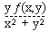= 0.
2. Dokazati da je  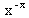dx
= 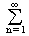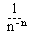.
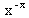dx
= 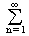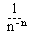.
3. a) Izracunati integral I = 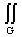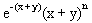dxdy, gde je G={(x,y) ÎR² : x ³ 0; y ³ 0}
b) Izracunati integral I = 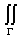2dxdy + y dzdx - x²z dydz, gde je G spoljna strana elipsoida 4x² + y² + 4z² = 1 koji pripada prvom oktantu.
4. Data je funkcija ƒ (x) = ln (x + 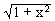)
a) Razviti funkciju u stepeni red.
b) Sumirati red: 7 + 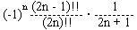.
5. Naci integral I(a, b) = 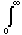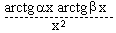dx.